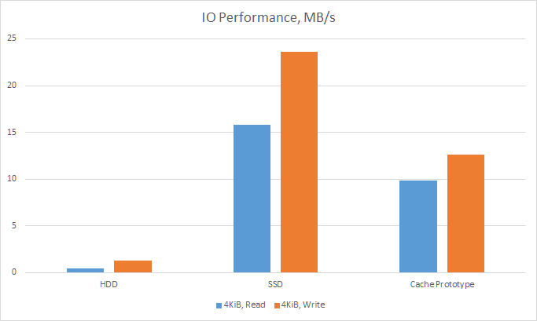
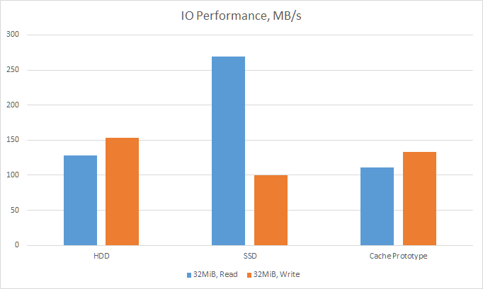

Diskache is a caching software, that transparently combines large slow disks and fast small ones to get advantages of both. It intelligently manages data across them, caching frequently accessed file chunks on your fast disk.
 Windows 7 urges you to vote 'Yes' on Steam Greenlight.
Windows 7 urges you to vote 'Yes' on Steam Greenlight.
What is it for?
{ TL;DR; go to benchmark }
Usually, the faster your disk is, the more you pay for it per 1GB of storage. As a result, many modern desktop computers, laptops and workstations contain a smaller fast disk with size around 100GB, which is used to store frequently used programs and documents, complemented with one or more higher capacity disks, which provide terabytes of cheaper storage.
Now instead of buying 512GB SSD for $200 you can buy a smaller one for just $70 and get nearly the same performance in most scenarios on existing multiTB storage.
Personal PC
A single modern game with advanced graphics quality for a PC can now occupy more than 50GB of storage by its own. And if you want to install 3 of those, there's an all-or-nothing compromise: one of them will have to go to a slow disk, which means long "loading..." screen during launch and/or between scenes.
Home photo and video collections also often end up on slow drives, and navigating through them becomes painfull while you wait for thumbnails to show up.
Workstation
Software source code, your company data assets, corporate email boxes, browser caches, especially combined, will eventually grow big enough to force you to decide, which of them you can tolerate being available at lower speed.
Diskache can intelligently make this decision for you. Some 30 first seconds of each video clip from your collection will be cached on a fast disk, which will allow you to quickly navigate through movies, and start playback instantly. Game files will be distributed in accordance to how frequently they are being loaded. The files you are working on the most will be faster to write and read even though they will still lie in the same folder as others. Rarely accessed pieces of a local database will be automatically offloaded to a slower drive.
How does it work?
Diskache hides physical disks behind a virtual disk. Software remembers which data has been read and written to its virtual disk during your normal system operation, and also keeps track of access history and data usage patterns. This information is then used when data request comes in. Based on time, chunk size, and requested data location, Diskache decides which physical disk should serve the request.
Diskache also moves data between the cache and the main storage to accomodate for the future requests.
Prototype performance
Prototype has been tested on the following configuration:
- Main storage: a file on Western Digital Red 2TB HDD
- Cache storage: a file on Samsung 840 PRO SSD
- CPU: Intel Core i7 3930K
- RAM: 24GiB DDR3 Quad Channel 1600MHz
- MB: Intel DX79TO
Random reads and writes, block size 4KiB, no queue 
Sequential reads and writes, no queue 
Get hands on the prototype (IT media only).
Journey to release
Already in the prototype
- main storage and cache can both be ordinary files, no need to resize partitions
- can cache existing disk if it is not used by Windows boot process
- supports write-through, if needed
- supports additional in-memory caching (unsafe against power losses and hardware failures)
Basic features
- simple wizard configuration
- performance similar or better than prototype
- advanced configuration through config file
Advanced features (if somewhat overfunded)
- automatic suggestion of optimal configuration
- better performance on large blocks in some scenarios
- advanced configuration through UI
- TRIM support
Top tier (if heavily overfunded)
- best performance via I/O scheduling with request queues
- various performance visualizations
Enterprise tier
- enterprise edition with support SLA
- software compatibility database
Limitations
- Windows can not be booted from virtual disks created by Diskache
- Some programs might not work as expected when installed to a virtual disk
- Some programs might not work with files, stored on a virtual disk
- Swap files and hibernating Windows to a virtual disk is not supported
-
Minimum requirements:
- Prototype-level performance: Windows XP Home Edition or Windows Server 2003
- Advanced-level performance: Windows 7 or Windows Server 2008 R2